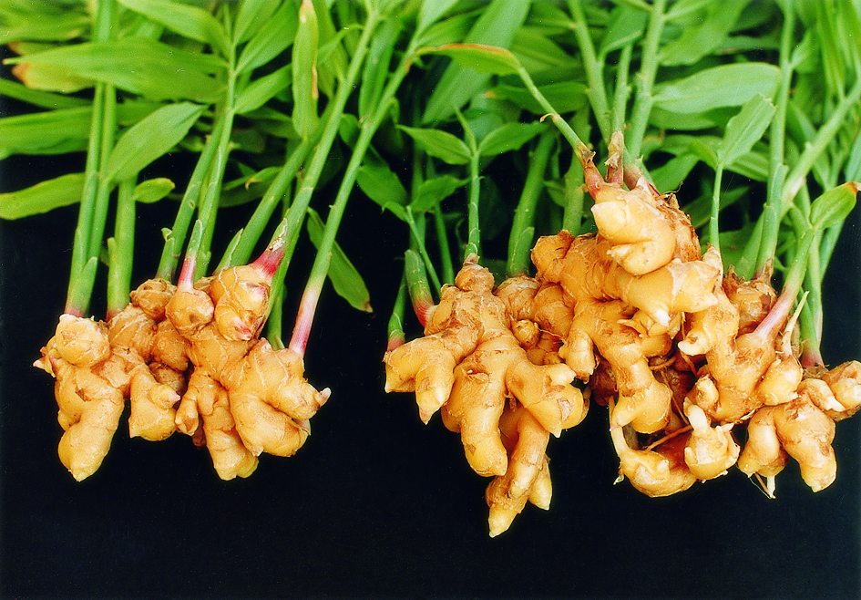

Zingiber officinale
| common name | ginger | |
| en español | jengibre | |
| name in Āyurveda | dried: śuṇṭhī (शुण्ठी), nāgara (नागर); fresh: ārdraka (आर्द्रक) | |
| name in TCM | dried: gān jiāng (干姜); fresh: shēng jiāng (生姜) | |
| plant family | Zingiberaceae (ginger) | |
| parts used | fresh and dried rhizome |
 from Wikimedia Commons by Seosan City Government - Seosan City Government, CC BY-SA 4.0
{kind=link}
observations/description
dried root
- small yellowish beige to ecru chips of root
- pleasant, soft, concentrated scent of ginger: sour, pungent, deep
"Ginger", Wikipedia
- herbaceous perennial that grows annual pseudostems (false stems made of the rolled bases of leaves) about one meter tall, bearing narrow leaf blades.
- inflorescences bear flowers having pale yellow petals with purple edges, and arise directly from the rhizome on separate shoots
distribution/conservation status
"Ginger", Wikipedia
- originated in Maritime Southeast Asia and was likely domesticated first by the Austronesian peoples
- transported with them throughout the Indo-Pacific during the Austronesian expansion about 5000 years ago, reaching as far as Hawaii
- one of the first spices to have been exported from Asia, arriving in Europe with the spice trade, and was used by ancient Greeks and Romans
- in 2020, global production of ginger was 4.3 million tons, led by India with 43% of the world total; Nigeria, China, and Nepal also had substantial production
primary actions
The Yoga of Herbs, p. 121-2
- stimulant, diaphoretic, expectorant, carminative, antiemetic, analgesic
The Modern Herbal Dispensatory, p. 236-7
- analgesic, antiemetic, antinausea, aromatic, carminative, counterirritant, diaphoretic, digestive tonic, circulatory stimulant, anti-inflammatory, antiviral, antibacterial
Spiritual Herbalism, p. 60-1
- analgesic, antacid, antiemetic, anti-inflammatory, antispasmodic, aperitive, aromatic, carminative, diaphoretic, diuretic, emmenagogue, nervine, rubefacient, sialagogue, stimulant, tonic, ciruclatory stimulant, expectorant, antiseptic, sexual tonic, anticatarrhal, antimicrobial, antiviral, hypoglycemic, aphrodisiac
The New Age Herbalist, p. 128
- digestive stimulant, carminative, antinausea, circulatory stimulant, expectorant, diaphoretic
notes from class, 27 Jan 2025
- antiemetic, anti-inflammatory, antispasmodic, circulatory stimulant
system affinities
digestive, cardiovascular, respiratory, immune, integumentary
primary uses
The Yoga of Herbs, p. 121-2
- for acute respiratory illnesses like colds, flus, laryngitis, headaches
- for digestive issues like indigestion, vomiting, belching, abdmoinal pain, hemorrhoids
- tonic to the heart/circulatory system
- anti-inflammatory: supports arthritis
- perhaps most sattvic of the spices
- with honey to relieve kapha
- with rock sugar to relieve pitta
- with rock salt to relieve vāta
- dry ginger better stimulant and expectorant for reducing kapha and increasing agni
- fresh ginger better diaphoretic and better for colds, cough, vomiting, and deranged vāta
- relieves gas and cramps in the abdomen, including menstrual cramps due to cold
- externally as a paste for pain and headaches
The New Age Herbalist, p. 128
- warming and stimulating, promotes gastic secretion and food absorption
- eases indigestion, colic, flatulence
- effective for travel/motion sickness and morning sickness
- stimulates heart and circulation; good for cold hands and feet
- either taken internally or externally in a hand/foot bath
- dispels mucus and phlegm with warming expectorant action
- ginger tea good for colds/flu, causes an eliminative sweat
- ginger juice/tea can be massaged into the scalp to stimulate hair growth
- in TCM, fresh ginger is considered better for treaing colds and causing sweating, whereas dried ginger is considered better for treating respiratory and digestive disorders
The Modern Herbal Dispensatory, p. 236-7
- pungent aromatic used to relieve nausea, vomiting, motion sickness
- take capsules/extract before traveling for motion sickness
- stimulates digestive secretions when taken with or after meals
- enhances immune function
- promotes secretion of bile and gastric fluids
- increases blood circulation by inhibiting platelet aggregation
- potent anti-inflammatory; as effective as ibuprofen for reducing pain and inflammation associated with arthritis
- fresh ginger is a potent antiviral and antibacterial
- for influenza, cold, and bacterial and viral gastroenteritis
Spiritual Herbalism, p. 60-1
- indicated for migraines, motion sickness, morning sickness
- digestive distress: indigestion, flatulence, abdominal chills
- respiratory issues: cough, cold, bronchial/respiratory problems
- aids circulation: good for cold extremeties or poor peripheral circulation
- antispasmodic, good for menstrual cramps
- anti-inflammatory, good for rheumatism
- stimulating: good for fatigue, learning issues, mental fog
- rebuilds the body's fire and can be used for depression (including seasonal)
- 'good for every ailment under the sun'
notes from class, 27 Jan 2025
- heats up digestion
- fresh is better where digestion is sensitive
- good for slow/sluggish digestion, constipation, cold/stagnant conditions
- good for digestive issues like colic, abdominal distention, flatulence, abdominal pain, food poisoning, stomach flu
- so long as these conditions are not too hot/feverish
- improves lipid metabolism
- even small doses work really well
energetics
The Yoga of Herbs, p. 121-2
- reduces vāta, kapha; increases pitta
- pungent/sweet taste - pungent post-digestive effect
- heating
- dry ginger is hotter and drier than fresh
The Modern Herbal Dispensatory, p. 236-7
- warming, drying
Spiritual Herbalism, p. 60-1
- spicy, pungent, hot, dry
pharmacology
The New Age Herbalist, p. 128
- volatile oil (up to 3%)
- mainly zingiberone and bisabolene
- camphene, geranial, linalool, borneol
- oleoresin
- containing pungent principles gingerols, shogaols, zingerone
- fats, protein, starch, vitamin A, vitamin B, minerals, amino acids
Spiritual Herbalism, p. 60-1
- volatile oils, phenols, alkaloids, mucilage, nutrients, potassium, magnesium, sodium, vitamin A, vitamin B, vitamin E, proteins, fats, antioxidants, calcium, capsaicin
contraindications/pharmaceutical interactions/warnings
The Yoga of Herbs, p. 121-2
- contraindicated for inflammatory skin diseases, high fever, bleeding, ulcers
The Modern Herbal Dispensatory, p. 236-7
- some authors recommend avoiding during pregnancy
Spiritual Herbalism, p. 60-1
- do not use during pregnancy because it is warming and moving
- do not use essential oil during pregnancy
- do not use when there is excess heat in the body
preparations
The Modern Herbal Dispensatory, p. 236-7
- fresh juice
- equal parts juice and water
- add honey and lemon/lime to taste
- tincture
- fresh juice preserved with 25% alcohol
- dried root, 1:5, 60% alcohol
- glycerite
- dried root, 1:5, sealed simmer method
- fresh juice preserved with 50% glycerin, add 20% brandy or rum
- powder
Herbal Materia Medica, p. 39
- strong decoction
- dried root, 1:32
- tincture
- fresh root, 1:2
The Herbal Medicine-Maker's Handbook, p. 110, 115, 155, 192, 200
- hot infusion
- dried root, 2-3 g: 8 oz
- fresh root, a few slices: 8 oz
- decoction
- dried root, 2-3 g: 8 oz
- fresh root, a few slices: 8 oz
- tincture
- fresh root, 1:2, 100% alcohol
- dried root, 1:4, 80% alcohol
- glycerite
- fresh root, 1:2, 100% glycerin
- dried root, 1:4, 60% glycerin
- oil
- dried root
The Yoga of Herbs, p. 78-9, 121-2
- hot infusion
- fresh/dried root, 1:4 (strong)
- fresh/dried root, 1:8 (moderate)
- cold infusion
- fresh/dried root, 1:4 (strong)
- fresh/dried root, 1:8 (moderate)
- decoction
- fresh/dried root, 1:16, reduce to 1/4 original amount
- powder
- juice
dosage
The Modern Herbal Dispensatory, p. 236-7
- fresh juice: 8 oz, 3/day
- tincture
- fresh juice: 1-5 mL, up to 8/day
- dried root: 0.8-1.5 mL in water, 3/day
- glycerite
- fresh juice: 0.5-1 tsp with water, as needed
- dried root: 1-3 mL in water, as needed
- powder: 500-1000 mg, as needed (up to 8 daily)
Herbal Materia Medica, p. 39
- strong decoction: 1-2 oz, as needed
- tincture: 10-20 drops in warm water, as needed
The Herbal Medicine-Maker's Handbook, p. 110, 115, 155, 187
- hot infusion: as needed
- decoction: as needed
- tincture: 2-4 mL in warm water, as needed
- glycerite: 10-25 drops, 3-4/day
The Yoga of Herbs, p. 92, 121-2
- hot infusion: 2 oz, 3/day
- cold infusion: 2 oz, 3/day
- decoction: 2 oz, 3/day
- powder: 250-500 mg, 3/day
extra information
The Yoga of Herbs, p. 121-2
- called viśvabheṣaja in medieval Āyurvedic texts, or 'the universal medicine'
- fresh ginger juice was added to ginger powder (in a ratio of upwards of 4:1) and mixed until it became a thick jam, then rolled into pills about the size of a pea
- two pills were taken three times a day
Spiritual Herbalism, p. 60-1
- cultivated and used in China and India for thousands of years
- Romans added it to mulled wine for fertility and lust
- used as an aphrodisiac in Arabia and Turkey
- Chinese used it as a folk cure for vitiligo
- disliked by the Puritans for its warming/aphrodisiac quality
personal experiences/simples
decoction (8 g: 16 oz, 20 minutes), dried root
- very sweet ginger aroma as it cooks; almost like candied ginger
- light yellow color, slightly chalky/opaque
- incredibly intense flavor, can only take small sips at a time
- extremely pungent, sour
- spicy/tingling mouth feel during and after for a long time
- can taste more sweetness as it cools
witchcraft
Spiritual Herbalism, p. 60-1
- thaws frozen feelings, breaks emotional dams
- excellent for those who need to let tears flow
- good for those who are ready to engage in forgiveness work with families, as it inspires heartfelt communication
- builds self-esteem and confidence
- nourishes the giving and receiving nature of love
- warming, brings life to the solar plexus; the ideal third cakra medicine
- planetary influences: mars, fire
The Witch's Encyclopedia of Magical Plants, p. 134-5
- used as an aphrodisiac and to increase a man's virility
- used in religious and marriage rites in India
- believed to ward off plague
- used in exorcisms in Italy
- warn to ward off harmful spirits in Thailand
- elements: earth, fire
- astrological influence: aries, sagittarius, scorpio, mars, moon
recipes
sources
Easely, Thomas and Steven Horne. The Modern Herbal Dispensatory (2016)
Frawley, David and Vasant Lad. The Yoga of Herbs: An Ayurvedic Guide to Herbal Medicine (1986)
"Ginger" on Wikipedia. Retrieved 7 May 2025.
Goldberg Blackthorn, Samantha and Shona MacDougall. Ace of Cups Herbal Medicine and Botanical Magic Herbal School (2024)
Kynes, Sandra. The Witch's Encyclopedia of Magical Plants (2024)
Mabey, Richard et al. The New Age Herbalist (1988)
Rose, Karen M. The Art & Practice of Spiritual Herbalism (2022)